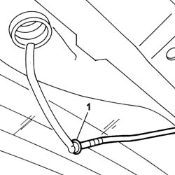
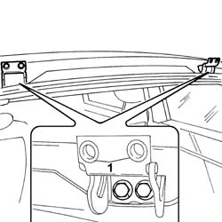
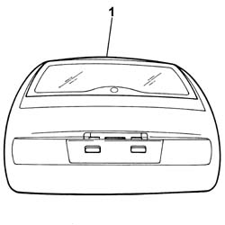

7210E56 TAIL-GATE
- Path
- Procedures > 72 PANELS AND FRAME > 7210 REMOVING REFITTING > 7210E EXTERNAL PARTS > 7210E56 TAIL-GATE
- Kind
- repair procedure (removal / refitting; the operation number is the code)
- Applies to
- all engines; all production periods
- Interactive page
- https://sloeber94.github.io/elrnDB-fUlss/en/#/179007975
Applies to: all engines; all production periods
 Removing
Removing
 Refitting
RefittingOp. 7040H42 REAR PILLAR TRIM - R R
Op. 7040H56 REAR SIDE PANEL FLAP (ONE) - R.R.
1. Disconnect the rearscreen washer pipe.

Applies to: all engines; all production periods
- Undo the bolt fixing the earth to the bodyshell pillar.
- Disconnect the electrical connection for the tailgate wiring.
- Remove the tailgate wiring, the bodyshell pillar earth and the rearscreen washer pipe from the bodyshell pillar.
1. Undo the bolts fixing the tailgate to the hinges.

Applies to: all engines; all production periods
1. Remove the rear tailgate.

Applies to: all engines; all production periods
Refitting
Removing- Fit the rear tailgate.
- Tighten the bolts fixing the tailgate to the hinges to torque.
- Fit the tailgate wiring, the bodyshell pillar earth and the rearscreen washer pipe on the bodyshell pillar.
- Connect the electrical connection for the tailgate wiring.
- Tighten the bolt fixing the earth to the bodyshell pillar.
- Connect the rearscreen washer pipe.